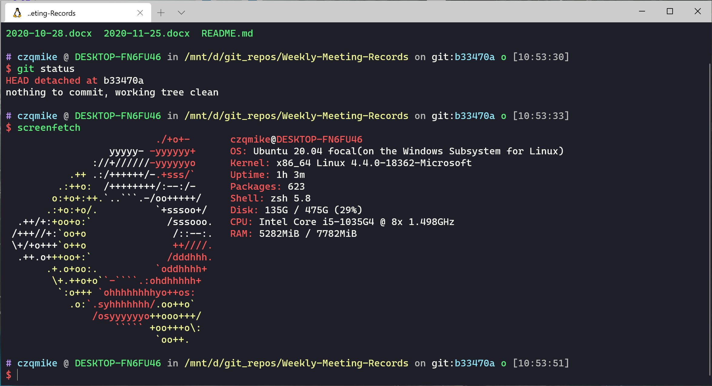

Windows Terminal折腾记
本文最后更新于：39 分钟前
起因
我的主力是Windows GUI + Ubuntu 命令行，这两天终于受够了Windows PowerShell的苦（虽然对一部分的Linux命令做了兼容，但是体验还是一言难尽）。
于是下定决心正式折腾了下Windows下的Linux子系统 (WSL)。
Windows Terminal的配置
我采用的是：Windows Terminal + WSL(Ubuntu 20.04)
以上两个都可以直接从微软的应用商店一键安装。
主题方面用的是：Windows Terminal dracula主题 + oh-my-zsh ys主题。
主题以及zsh的配置可以参考WSL 配置指北：打造 Windows 最强命令行以及吊打一切 Shell 的 oh-my-zsh 简单配置指北。
最终的效果如下：

遇到的坑
WSL无法自动挂载插入的SD卡
-
问题
因口袋光光，故购入Surface Pro7 8+128G版做远程和学习使用。
可以自行插入TF进行扩容，我插入了一张三星的256G TF卡。
在Win上使用没问题，但是WSL不能自动识别它，导致每次都要sudo mount -t drvfs D: /mnt/d那如果我使用1000次，就要输入1000次上面的命令，是对生命的严重浪费！（其实就是强迫症= =
-
解决方法
解决方法说起来也简单，就是在~/.bashrcor~/.zshrc中添加上这一行：
sudo mount -t drvfs D: /mnt/d
但是问题来了，如果我要mount到/mnt的话必须要有sudo权限，那么等于我还是要在新建一个terminal的时候输入一次密码（因为会自动执行mount命令）
结果就是则并不真正解决问题…
最后的解决办法是将 $USER 下的 mount指令加入/etc/sudoers，这样每次自动mount而不用输入密码了！
加入方法见这里
Vim光标无法正常变为方块
这个好像是Windows Terminal自己的bug, 解决方法就是在~/.vimrc中加入以下代码
1 | |
over, enjoy it.
本博客所有文章除特别声明外，均采用 CC BY-SA 4.0 协议 ，转载请注明出处！